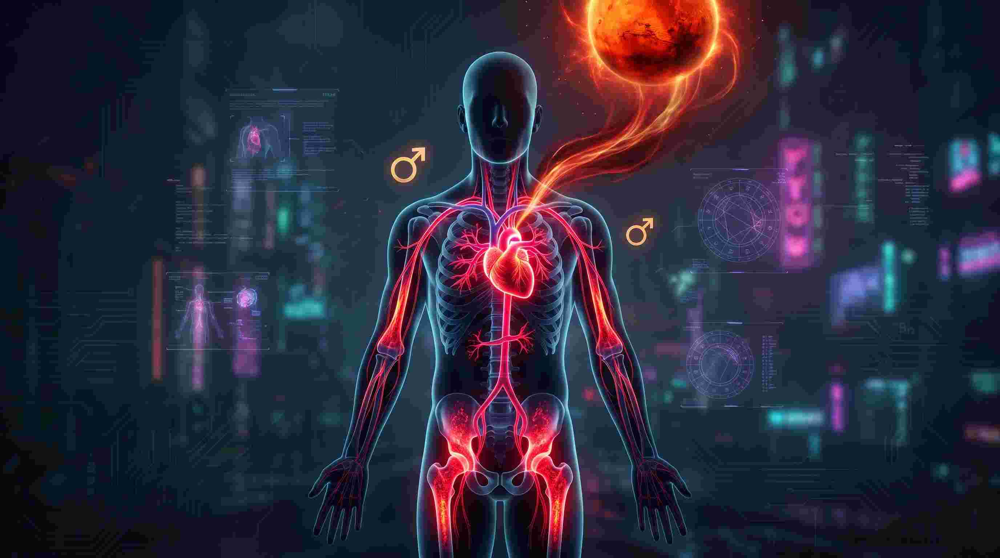
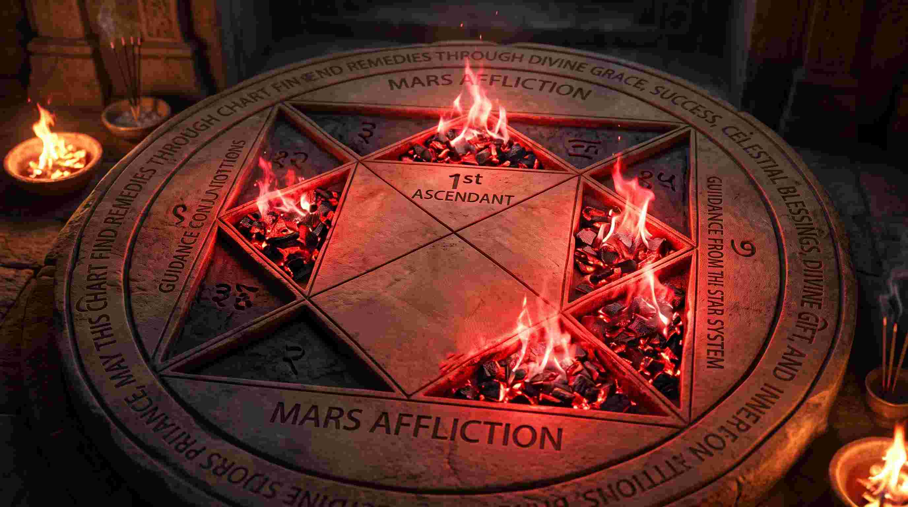

जब भी शादी की बात आती है, तो भारतीय परिवारों में सबसे पहला और सबसे डरावना सवाल यही होता है— "क्या लड़का या लड़की मांगलिक (Manglik) है?" टीवी के पंडितों और आधी-अधूरी जानकारी वाले ज्योतिषियों ने 'मंगल दोष' को एक ऐसा हौव्वा (Monster) बना दिया है, जिसे सुनकर लोग कांपने लगते हैं। कहा जाता है कि अगर एक मांगलिक की शादी गैर-मांगलिक से हो गई, तो जीवनसाथी की मृत्यु हो जाएगी!
लेकिन क्या यह सच है? एक मेडिकल छात्र (MBBS) और वैदिक ज्योतिषी होने के नाते, मैंने मंगल दोष का गहराई से अध्ययन किया है। आज मैं आपको मंगल दोष (Mangal Dosha) का वह बायोलॉजिकल और न्यूरोलॉजिकल (Biological and Neurological) सच बताऊंगा, जिसे सुनकर आपके होश उड़ जाएंगे। मंगल दोष कोई श्राप नहीं है; यह आपके शरीर में बहने वाले हार्मोंस और एड्रेनालाईन (Adrenaline) का खेल है!
"मंगल (Mars) आपकी जन्म कुंडली में बैठा कोई राक्षस नहीं है; यह आपके रक्त (Blood) में दौड़ता हुआ हीमोग्लोबिन है। मंगल दोष का अर्थ है 'हाइपर-एनर्जी' (Hyper-Energy), न कि मृत्यु।"
1. मेडिकल एस्ट्रोलॉजी: मंगल (Mars) वास्तव में क्या है?
वैदिक ज्योतिष में मंगल को ग्रहों का 'सेनापति' कहा जाता है। इसे युद्ध, अग्नि, साहस, क्रोध और दुर्घटनाओं का कारक माना जाता है। लेकिन जब हम इसे मेडिकल साइंस (Medical Astrology) के चश्मे से देखते हैं, तो मंगल आपके शरीर में बोन मैरो (Bone Marrow), रेड ब्लड सेल्स (RBCs), टेस्टोस्टेरोन (Testosterone) और एड्रेनालाईन (Adrenaline) को नियंत्रित करता है।

जब आपकी जन्म कुंडली में मंगल 1st, 4th, 7th, 8th या 12th भाव में बैठता है, तो व्यक्ति को 'मांगलिक' (Manglik) कहा जाता है। इसका सीधा सा मतलब यह है कि इस व्यक्ति के शरीर और मस्तिष्क की वायरिंग (Neural Wiring) एक आम इंसान से बहुत ज्यादा 'उग्र' (Aggressive) और ऊर्जावान (High-energy) है। ये लोग बहुत जल्दी गुस्सा होते हैं, इनमें गज़ब का जुनून (Passion) होता है, और इनकी यौन ऊर्जा (Libido) बहुत अधिक होती है।
2. मांगलिक की शादी गैर-मांगलिक से क्यों टूट जाती है? (The Real Reason)
लोग कहते हैं कि मांगलिक की शादी गैर-मांगलिक से करने पर जीवनसाथी मर जाता है। यह 100% बकवास और मिथक है! तो फिर शादी टूटती क्यों है? इसे 'एनर्जी मिसमैच' (Energy Mismatch) के सिद्धांत से समझें:
कल्पना करें कि एक मांगलिक व्यक्ति (जिसके अंदर 1000 वॉट की ऊर्जा है) की शादी एक गैर-मांगलिक व्यक्ति (जिसके अंदर 100 वॉट की ऊर्जा है) से हो जाती है। मांगलिक व्यक्ति को हर काम तुरंत चाहिए, उसे रोमांच चाहिए, वह बहस में आक्रामक हो जाता है। दूसरी तरफ, गैर-मांगलिक व्यक्ति शांत रहना चाहता है, वह इस आक्रामकता (Aggression) को झेल नहीं पाता। धीरे-धीरे गैर-मांगलिक व्यक्ति तनाव (Cortisol) का शिकार हो जाता है, उसका स्वास्थ्य गिरने लगता है, और अंततः या तो वे अलग हो जाते हैं, या गैर-मांगलिक व्यक्ति गंभीर बीमारियों का शिकार हो जाता है। मृत्यु मंगल नहीं देता, मृत्यु 'क्रोनिक स्ट्रेस' (Chronic Stress) देता है!
यही कारण है कि ऋषियों ने नियम बनाया कि एक मांगलिक की शादी दूसरे मांगलिक से ही होनी चाहिए। जब 1000 वॉट की ऊर्जा 1000 वॉट से टकराती है, तो दोनों एक-दूसरे के गुस्से और जुनून को संतुलित (Cancel out) कर देते हैं।
3. कुंडली के 5 भावों में मंगल दोष का प्रभाव
मंगल दोष केवल एक प्रकार का नहीं होता। यह इस बात पर निर्भर करता है कि मंगल किस भाव (House) में बैठा है:

- प्रथम भाव (लग्न) में मंगल: व्यक्ति स्वभाव से बेहद जिद्दी, आक्रामक और डॉमिनेटिंग (Dominating) होता है। वह रिश्ते में हमेशा अपनी चलाना चाहता है, जिससे जीवनसाथी का दम घुटने लगता है।
- चतुर्थ भाव (सुख भाव) में मंगल: यह भाव घर की शांति का है। यहाँ मंगल आग लगाता है। ऐसे व्यक्ति के घर में हमेशा लड़ाई-झगड़े, चीखना-चिल्लाना और प्रॉपर्टी को लेकर विवाद (Property disputes) होते रहते हैं।
- सप्तम भाव (विवाह भाव) में मंगल: यह सबसे खतरनाक स्थिति मानी जाती है। यह सीधे तौर पर जीवनसाथी पर 'फिजिकल या इमोशनल वायलेंस' (Domestic violence / intense arguments) का कारण बनता है। व्यक्ति का गुस्सा सीधे पार्टनर पर निकलता है।
- अष्टम भाव (आयु और रहस्य) में मंगल: यह मंगल 'छिपी हुई आग' है। ऐसे लोगों में अचानक दुर्घटनाएं (Sudden accidents), खून की कमी, या गुप्तांगों (Reproductive organs) से जुड़ी गंभीर समस्याएं (जैसे Piles, Fistula, Menstrual issues) देखी जाती हैं।
- द्वादश भाव (शयन और व्यय) में मंगल: यह 'बेड प्लेजर' (Bed pleasures) और खर्चों का भाव है। यहाँ मंगल अत्यधिक कामुकता (High libido), नींद न आना (Insomnia), और अचानक बड़े वित्तीय नुकसान (Financial losses) देता है।
4. मंगल दोष कब 'कैंसिल' (रद्द) हो जाता है? (Cancellations)
लगभग 50% से अधिक लोगों की कुंडली में मंगल दोष अपने आप रद्द (Cancel) हो जाता है, लेकिन डराने वाले ज्योतिषी यह बात कभी नहीं बताते। मंगल दोष इन स्थितियों में रद्द हो जाता है:
- 28 वर्ष की आयु के बाद: मेडिकल साइंस के अनुसार, 28-30 वर्ष की आयु तक मनुष्य के मस्तिष्क का 'प्रीफ्रंटल कॉर्टेक्स' (Prefrontal Cortex - जो निर्णय और गुस्से को कंट्रोल करता है) पूरी तरह विकसित हो जाता है। ज्योतिष भी मानता है कि 28 वर्ष के बाद मंगल शांत (Mature) हो जाता है और दोष खत्म हो जाता है।
- यदि मंगल अपनी ही राशि (मेष या वृश्चिक) या उच्च राशि (मकर) में हो, तो मंगल दोष नहीं लगता। ऐसा व्यक्ति अपनी अपार ऊर्जा का उपयोग करियर (जैसे आर्मी, सर्जन, स्पोर्ट्स) में करता है, न कि जीवनसाथी से लड़ने में।
- यदि कुंडली में 'गुरु' (Jupiter) की दृष्टि मंगल पर पड़ जाए, तो गुरु का ज्ञान मंगल के गुस्से को बुझा देता है।
5. मंगल दोष के अचूक वैज्ञानिक और वैदिक उपाय (Remedies)
मंगल दोष के उपाय कुंभ विवाह (पेड़ से शादी) जैसे पाखंड तक सीमित नहीं हैं। यदि आपके अंदर अत्यधिक 'फायर एनर्जी' है, तो आपको उसे वैज्ञानिक रूप से चैनल (Channelize) करना होगा:
- रक्तदान (Blood Donation): यह मंगल का सबसे बड़ा और अचूक उपाय है! मंगल रक्त (Blood) है। जब आप साल में एक या दो बार रक्तदान करते हैं, तो आप ब्रह्मांड को संकेत देते हैं कि आपने अपने 'रक्त का बलिदान' दे दिया है। इससे दुर्घटनाओं (Accidents) का खतरा 90% तक टल जाता है।
- शारीरिक व्यायाम (Heavy Physical Exercise): जिम जाना, दौड़ना, या मार्शल आर्ट्स करना। जब आप अपनी मांसपेशियों (Muscles) को तोड़ते हैं, तो मंगल का अतिरिक्त एड्रेनालाईन (Adrenaline) शरीर से बाहर निकल जाता है, और आप अपने पार्टनर के साथ शांत व्यवहार करते हैं।
- अंगारक स्तोत्र का पाठ: स्कंद पुराण का यह स्तोत्र मंगल की नकारात्मक ऊर्जा को सकारात्मक (Constructive) ऊर्जा में बदलता है। जो व्यक्ति कर्ज (Debt) में डूबा हो या जिसका दांपत्य जीवन खराब हो, उसे हर मंगलवार अंगारक स्तोत्र का पाठ अवश्य करना चाहिए।
- लाल चीजों का दान और हनुमान जी की शरण: हनुमान जी मंगल के नियंत्रक हैं। मंगलवार को हनुमान जी को चोला चढ़ाना और जरूरतमंदों को गुड़ या मसूर की दाल दान करना मंगल को शांत (Pacify) करता है।
निष्कर्ष: मंगल दोष से डरें नहीं, इसे दिशा दें!
मंगल दोष कोई बीमारी नहीं है; यह एक 'सुपरपावर' (Superpower) है। दुनिया के सबसे बेहतरीन सर्जन (Surgeons), सबसे महान सेनापति और सबसे सफल एथलीट्स मांगलिक ही होते हैं, क्योंकि बिना 'फायर' के कोई भी बड़ा काम नहीं किया जा सकता।
यदि आप मांगलिक हैं, तो बस एक ऐसे जीवनसाथी का चुनाव करें जो आपकी इस ऊर्जा को समझ सके या खुद भी उसी ऊर्जा स्तर (Energy level) का हो। अपनी कुंडली का सही और तार्किक विश्लेषण करवाएं। मंगल आपको बर्बाद करने के लिए नहीं, बल्कि दुनिया जीतने की ऊर्जा देने के लिए आपकी कुंडली में बैठा है!